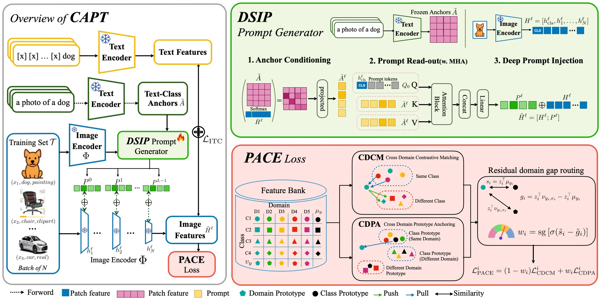
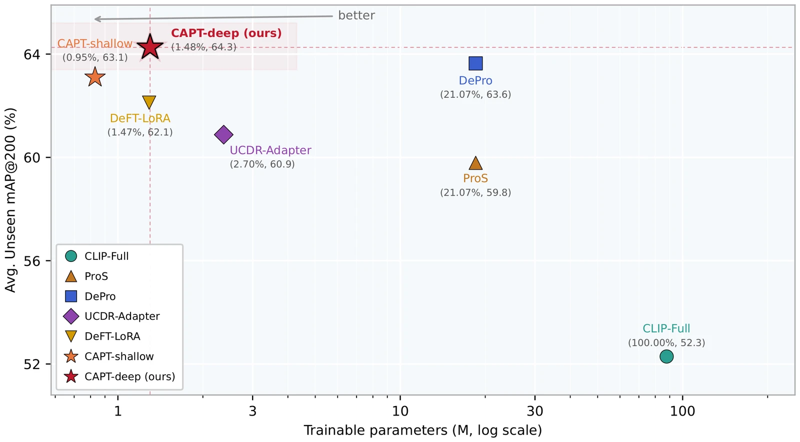
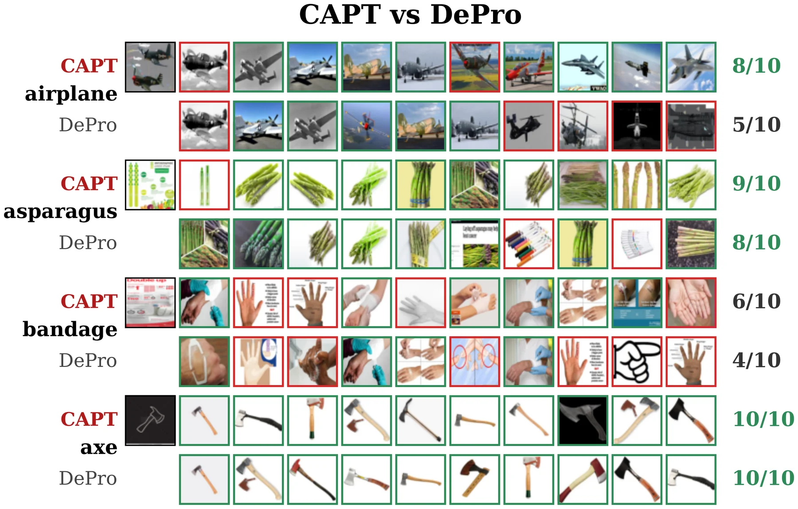
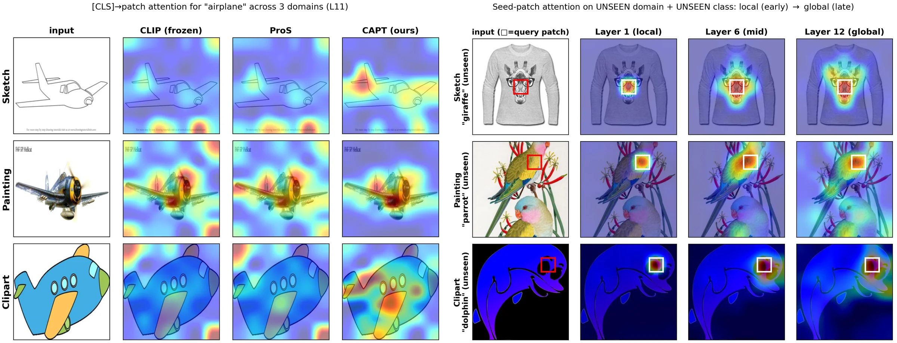

Universal Cross-Domain Retrieval (UCDR) aims to retrieve relevant images from unseen domains and categories, requiring generalization under both domain and semantic shifts. Recent methods improve UCDR by learning or simulating source-domain prompt components, but such source-based adaptation may still entangle class semantics with domain-specific visual cues. We instead propose CAPT (Cross-modal Anchored Prompt Tuning), a parameter-efficient framework that adapts a fully frozen CLIP backbone without domain-specific prompts or backbone fine-tuning.
The key module, DSIP (Deep Self-Instance Prompting), reads out layer-wise instance-specific visual prompts from CLIP's frozen text-class anchors, constraining per-image adaptation to convex combinations of those anchors rather than to free visual features or source prompts. For cross-domain feature alignment, PACE (Per-sample Alignment via Cross-domain Gap Estimation) routes each sample between contrastive alignment and prototype anchoring using a residual domain gap, measured by the similarity difference between same-domain and cross-domain class prototypes. Routing on this gap removes the hand-tuned loss weight between the two objectives and chiefly protects UdCDR retrieval.
Across DomainNet, Sketchy, and TU-Berlin, CAPT sets a new state of the art with only ≤ 1.35M trainable parameters. Code will be made publicly available.
Pick a held-out domain and a query. Both rows search the same real-photo gallery of unseen classes: CAPT and the frozen CLIP it starts from. Queries are a seeded random sample, one per class. Hover a result to see its class and cosine similarity.

Overview of CAPT. DSIP reads layer-wise visual prompts from image-conditioned frozen text-class anchors and injects them into the frozen CLIP ViT-B/32 image encoder. PACE aligns the output features by routing each sample between CDCM and CDPA by its residual domain gap.
Both CLIP encoders are frozen during training. We update only DSIP, a lightweight output-refinement layer (a residual MLP, about 0.26M parameters), and a small text context for image–text supervision, about 1.35M trainable parameters in total. At inference time, retrieval uses only the final image embeddings.
The anchor bank $A\in\mathbb R^{C\times d_t}$ encodes “a photo of a [class]” for the $C$ seen classes with the frozen CLIP text encoder, so it uses no unseen-class names. At layer $\ell$, the anchors and the current patch tokens are projected to a bottleneck of width $r$, $\tilde A=AW_a$ and $\bar H^{\ell}=[h^{\ell}_1,\dots,h^{\ell}_N]W_h$, and the anchors are conditioned on the image by a gated attention with a learnable scalar gate $\sigma(\gamma)$:
$$\hat A^{\ell}=\tilde A+\sigma(\gamma)\,\mathrm{softmax}\!\Big(\frac{\tilde A(\bar H^{\ell})^{\top}}{\sqrt r}\Big)\bar H^{\ell}.$$Static learnable queries $Q_0\in\mathbb R^{P_q\times r}$ then read out the visual prompt from the conditioned anchors. $Q_0$ is shared across images, but $P^{\ell}$ is image-specific because $\hat A^{\ell}$ is conditioned on the current image:
$$P^{\ell}=\mathrm{MHA}_{\ell}\big(Q_0,\hat A^{\ell},\hat A^{\ell}\big)\,W_u^{\ell}\in\mathbb R^{P_q\times d}.$$The prompt is appended to the token sequence at every transformer layer, $H^{\ell+1}=\mathrm{CLIPBlock}^{\ell}([H^{\ell};P^{\ell}])$. No domain prompt or domain label is used, so the same generator applies directly to unseen domains.
PACE keeps a FIFO feature bank with class and domain labels. Domain labels are used only at training time; inference is label-free. CDCM treats same-class samples from other domains as positives, $\mathcal P(i)=\{a: y_a=y_i,\ e_a\neq e_i\}$, with the $K=256$ hardest negatives from the bank in the denominator. CDPA pulls each sample toward its flat class prototype, $\mathcal L^{i}_{\mathrm{CDPA}}=1-z_i^{\top}\mu_{y_i}$. CDCM spreads, CDPA compacts, so a fixed balance is not optimal for every sample. PACE uses the prototype confidence $s_i=z_i^{\top}\mu_{y_i}$ and the residual domain gap
$$g_i=z_i^{\top}\nu_{y_i,e_i}-z_i^{\top}\mu_{y_i},$$where $\nu_{y_i,e_i}$ is the same-domain prototype of class $y_i$ in domain $e_i$. Both signals are standardized in the mini-batch, and
$$w_i=\mathrm{sg}\big[\sigma(\tilde s_i-\tilde g_i)\big],\qquad \mathcal L^{i}_{\mathrm{PACE}}=(1-w_i)\,\mathcal L^{i}_{\mathrm{CDCM}}+w_i\,\mathcal L^{i}_{\mathrm{CDPA}}.$$A larger gap increases the CDCM contribution, while a confident and already aligned sample receives more CDPA. The full objective is $\mathcal L=\mathcal L_{\mathrm{ITC}}+\lambda\,\frac{1}{|S|}\sum_i\mathcal L^{i}_{\mathrm{PACE}}$ with $\lambda=0.5$.
Leave-one-domain-out with the SnMpNet split (245 / 55 / 45 classes); Real is always the gallery. Unseen and Mixed use queries from the held-out domain and unseen classes, and differ only in whether the gallery also contains seen-class distractors. UdCDR uses held-out-domain queries from seen classes.
mAP@200 / Prec@200. Bold and underline mark the best and runner-up. † reproduced. CAPT-deep is the mean ± std over three training seeds; baselines are single runs under their published protocols.
Against DePro, the strongest prior method, CAPT-deep wins 21 of the 30 cells, including every Unseen and Mixed cell. The average margins are modest (Unseen mAP 0.6364 → 0.6428, Mixed 0.5686 → 0.5753) and DePro stays ahead on average UdCDR mAP (0.6881 vs. 0.6829). Over three seeds on the sketch holdout, the Unseen and Mixed gains over DePro are roughly 3–4× the seed standard deviation, while UdCDR mAP stays within noise.
| Method | Unseen | Mixed | UdCDR |
|---|---|---|---|
| DePro-Frozen | .6132/.5783 | .5426/.5163 | .6765/.4257 |
| DePro-LN | .6364/.5996 | .5686/.5398 | .6881/.4282 |
| CAPT | .6428/.6057 | .5753/.5473 | .6829/.4240 |
| CAPT+LN | .6455/.6081 | .5781/.5501 | .6853/.4248 |
| CAPT+LN+bias | .6458/.6085 | .5782/.5502 | .6877/.4260 |
DomainNet average. DePro's entry above tunes CLIP's LayerNorm affines; DePro-Frozen removes this. With the backbone fully frozen, CAPT wins 26 of 30 cells. Giving CAPT the same freedom (LN+bias, 1.55M parameters) closes the UdCDR mAP gap to 0.0004.
| Method | Sketchy | TU-Berlin | ||
|---|---|---|---|---|
| mAP@200 | Prec@200 | mAP@all | Prec@100 | |
| ProS† | .7151 | .6739 | .6138 | .7037 |
| DePro† | .7515 | .7177 | .6629 | .7203 |
| UCDR-Adapter† | .6933 | .6490 | .6314 | .7099 |
| CAPT | .7638 | .7291 | .6641 | .7305 |
Unseen classes. † our reimplementation in the same environment (frozen CLIP ViT-B/32, identical data and training). Our ProS matches its published Sketchy mAP@200 on the 100-image-per-class subset (0.6993 vs. 0.6991); the table uses the full gallery.

Average Unseen mAP@200 over the five held-out domains vs. trainable parameters. CAPT trains about 1.35M parameters (DePro and ProS 18.5M, UCDR-Adapter 2.37M, DeFT-LoRA 1.29M).
| Variant | Unseen | Mixed | UdCDR |
|---|---|---|---|
| Frozen + ITC | .3901/.3105 | .3391/.2644 | .4468/.2530 |
| + read-out | .6602/.6209 | .5867/.5539 | .7551/.4998 |
| + image-cond. (DSIP) | .6688/.6300 | .5880/.5586 | .7669/.5113 |
| + CDCM | .6770/.6342 | .5981/.5656 | .7712/.5084 |
| + PACE (full) | .6766/.6362 | .5962/.5665 | .7729/.5131 |
Sketch holdout, seed 0, components added cumulatively. The anchored read-out gives most of the gain; CDCM lowers UdCDR precision and PACE recovers it. This build-up ran on an earlier code revision, so its last row and Table 1 (0.6944) are not a matched pair.
| Variant | Unseen | Mixed | UdCDR |
|---|---|---|---|
| linear read-out (no MHA) | .6899/.6483 | .6092/.5792 | .7897/.5191 |
| free prompts (VPT-Deep) | .6854/.6450 | .6044/.5752 | .7906/.5183 |
| random anchor basis | .6923/.6508 | .6118/.5815 | .7897/.5211 |
| vision-only anchors | .6903/.6481 | .6090/.5779 | .7954/.5256 |
| CAPT (text anchors) | .6944/.6527 | .6141/.5841 | .7926/.5212 |
One component changed at a time (sketch, seed 0). The structured, image-conditioned read-out matters most. Text anchors add a consistent but modest prior: 0.0021 Unseen mAP over a random basis.
| Routing rule replaced by | Unseen | Mixed | UdCDR | wins | pHolm |
|---|---|---|---|---|---|
| shuffled $w_i$ within batch | +0.8 | +1.5 | +1.2 | 13/15 | 0.022 |
| fixed $w=0.3$ | +0.5 | +0.8 | +2.6 | 14/15 | 0.006 |
| fixed $w=0.5$ | +1.0 | +1.8 | +1.2 | 14/15 | 0.006 |
| fixed $w=0.7$ | +2.8 | +3.9 | +0.6 | 15/15 | 0.0005 |
| domain gap only $\sigma(-\tilde g_i)$ | +0.9 | +1.7 | +1.3 | 14/15 | 0.006 |
| confidence only $\sigma(\tilde s_i)$ | −0.4 | −0.4 | −0.1 | 4/13 | 0.53 |
| focal shaping | −1.3 | −1.7 | −0.4 | 5/15 | 0.53 |
| uncertainty weighting | +11.7 | +12.0 | +2.2 | 15/15 | 0.0005 |
Advantage of the reported rule in 10−3 mAP (>0: ours better) over five holdouts and three seeds. Grey: statistical tie.
No constant weight is competitive, and shuffling $w_i$ within the batch costs as much as freezing it, so the per-sample assignment carries the information. Confidence-only routing is indistinguishable from the combined rule. Stated precisely, PACE's Unseen gain is +0.0026 (not significant, p=0.19) while its UdCDR mAP gain is +0.0077 (p=0.005): PACE removes a loss weight and protects UdCDR rather than raising the Unseen score.
Change from the default in 10−3 mAP@200; ● Unseen, ▲ Mixed, dashed line = default. Sketch holdout, except injection depth $L$ (clipart). Data from Fig. 5 of the paper.
DePro with LayerNorm tuning stays slightly stronger on a few UdCDR precision cells, and PACE's prototypes degrade under severe class imbalance. The output-refinement layer is not a contribution, but it matters for the aggregate: in a matched re-evaluation, removing it moves the tally against DePro from 22/30 to 14/30, mostly on infograph. On ViT-B/16 both methods improve and the ranking depends on the stopping rule, so we do not claim the margin transfers.

Top-10 retrieval on shared infograph queries from unseen classes. CAPT improves airplane from 5/10 to 8/10, asparagus from 8/10 to 9/10 and bandage from 4/10 to 6/10, and matches DePro on axe.

Attention visualization. Left: [CLS]-to-patch attention for “airplane” on sketch, painting and clipart queries for frozen CLIP, ProS and CAPT. Right: attention from one query patch at layers 1, 6 and 12 on unseen-domain, unseen-class images, growing from local to global.
t-SNE of eight unseen classes: held-out-domain queries (circles) and real photos (squares). Move the slider to interpolate between the frozen CLIP embedding and the CAPT embedding of the same images.
Each domain uses its CAPT checkpoint from Table 1. Same-class 10-NN is the share of each point's ten nearest neighbours that share its class, measured in the original 512-d space.
@inproceedings{park2027capt,
title = {CAPT: Cross-modal Anchored Prompt Tuning for Universal Cross-Domain Retrieval},
author = {Park, Chanmin and Kang, Minyoung},
booktitle = {Proceedings of the IEEE/CVF Winter Conference on Applications of Computer Vision (WACV)},
year = {2027}
}